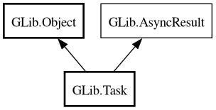

Task
Object Hierarchy:

Description:
[
CCode ( type_id =
"g_task_get_type ()" ) ]
public class Task :
Object,
AsyncResult
Content:
Properties:
Static methods:
- public static bool is_valid (AsyncResult result, Object? source_object)
- public static void report_error (Object? source_object, TaskReadyCallback callback, void* source_tag, owned Error error)
- public static void report_new_error (Object? source_object, TaskReadyCallback callback, void* source_tag, Quark domain, int code, string format, ...)
Creation methods:
Methods:
Inherited Members:
All known members inherited from class GLib.Object
All known members inherited from interface GLib.AsyncResult